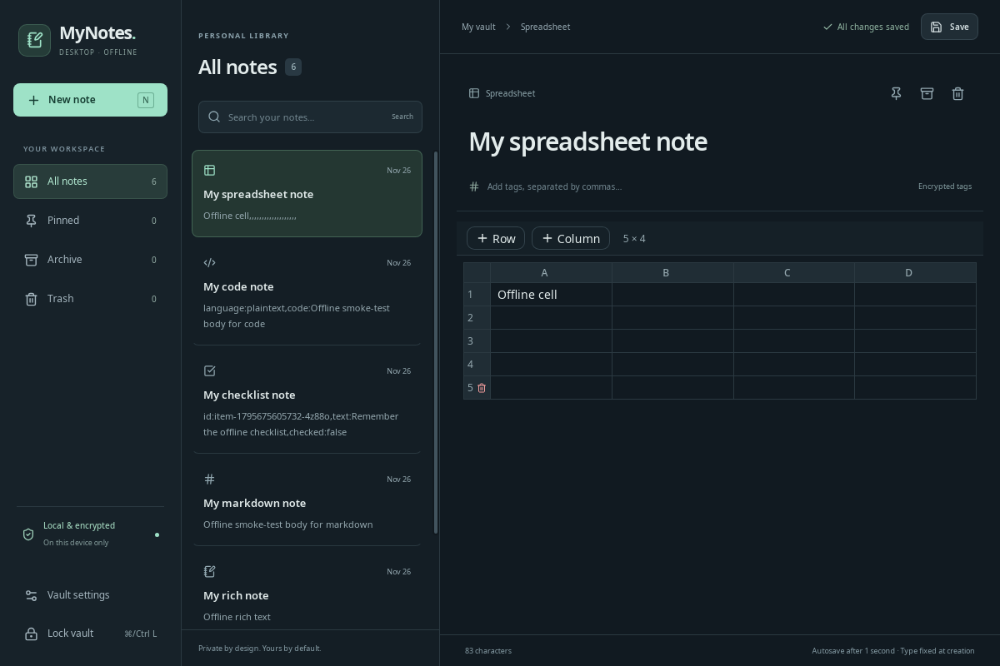

Separate Web/Pi App Preview

Choose a fully offline desktop vault with local encrypted SQLite, or the separate self-hosted web app for your Raspberry Pi or server. Desktop source is now on main: Linux test builds are verified; macOS and Windows native builds are not yet verified.
A Tauri 2 app for one user's fully offline notes, with a Rust-owned vault and encrypted local SQLite records. No accounts, login, Raspberry Pi, server, Docker, or HTTPS setup required to use the installed desktop app.
Verified platform: Linux x86-64 test builds and actual UI/keyring runtime checks on Ubuntu 24.04. These are initial test builds, not release-signed installers or Raspberry Pi/ARM builds.
macOS & Windows: Build configurations are included, but native builds, installers, runtime behavior, and signing are unverified. There is currently no ready Mac installer and no public GitHub Release. The macOS instructions below describe an unverified source-build path, not a download.
Titles, bodies, tags, and note metadata are encrypted inside local records. This is record-level encryption, not SQLCipher full-file encryption; counts, opaque IDs, and ciphertext sizes remain visible.
Set a numeric PIN of at least six digits, backed by an OS credential-store device secret and Argon2id key derivation. Save all five recovery codes separately: they are vault-access secrets, not note backups.
Choose plain text, rich text, Markdown, checklist, code, or spreadsheet notes. Desktop notes are separate from the web/Pi database; v1 does not automatically import or sync it.
Use local tags, search, pinning, archive, and trash. Search runs over unlocked notes on your computer, without sending your notes to a server.
Autosave queues edits and coordinates pending saves before switching, locking, or ordinary close. Manual save is also available. Lock the vault yourself; there is no idle, blur, or suspend auto-lock. It starts locked after restart.
Export a manual .mynotes-backup and restore on another supported computer with a matching recovery code. Keep the file and code separate; old copies retain their matching codes. Backup files are capped at 64 MiB.

This source-build path is unverified on macOS. Native Mac builds and runtime behavior still need testing. Building requires internet access for dependencies and toolchains; the installed desktop vault is designed to operate offline.
Install Node.js 22.x matching your Mac's native architecture (Apple Silicon arm64 or Intel x86-64), Xcode Command Line Tools, Rust, and pnpm 10.4.1. Follow the complete macOS prerequisites and toolchain setup before continuing.
These commands are for a desktop-only build. They include development tools, skip the web/Pi Node SQLite install script, and package only the app so Finder's DMG layout script is not needed. The command chain stops at the first error.
git clone --branch main https://github.com/nzicecool/mynotes.git &&
cd mynotes &&
NODE_ENV=development pnpm install --frozen-lockfile --prod=false --ignore-scripts &&
pnpm desktop:check &&
pnpm desktop:test &&
pnpm desktop:test:native &&
pnpm run desktop:build:macos --bundles app &&
open desktop/src-tauri/target/release/bundle/macosInstall fails at better-sqlite3? That module serves the separate web/Pi server; desktop uses Rust SQLite. The flags above avoid its install script. Missing tsc, vitest, or tauri after a failed install are downstream symptoms. Keep optional platform packages enabled; this bypass does not fix the web/Pi server.
Drag the generated MyNotes Desktop.app into Applications, then launch it. The current configuration uses ad-hoc signing, not notarization; Gatekeeper warnings may occur. This is a local testing path, not a verified or signed public distribution. See the macOS guide for full details.
DMG fails with AppleEvent timed out (-1712)? This is Finder/AppleScript installer packaging, not a TypeScript error. A DMG is optional: use the app-only command above and copy the app directly. The guide includes tool checks, comment-free zsh commands, and optional DMG packaging instructions.
These features belong to the separate web/Pi app, not the offline desktop vault. Run the web app on your Raspberry Pi or server for browser-based notes.
In the web/Pi app, note encryption happens in your browser before storage on your server. The password, PBKDF2, and HTTPS setup described here are web/Pi mechanisms, not desktop requirements.
For the web/Pi app, the native setup script installs Node.js, Caddy, systemd services, and HTTPS. Docker is an alternative. None of this server setup is required for desktop.
mynotes.<IP>.nip.io — no port forwarding, no domain purchase needed.git pull && pnpm build && sudo systemctl restart mynotes — or re-run setup-local.sh to apply any infrastructure changes.# Clone main for the web/Pi app
git clone --branch main https://github.com/nzicecool/mynotes.git
cd mynotes/deploy
# One-command install (SQLite default)
sudo bash setup-local.sh
# Optional: MySQL instead of SQLite
sudo bash setup-local.sh --db=mysql
# Check service status
sudo systemctl status mynotes
sudo systemctl status caddy-mynotes
# View live logs
journalctl -u mynotes -f
# Update to latest version
git pull && pnpm build
sudo systemctl restart mynotesExplore the offline desktop source or set up the separate web/Pi app. macOS currently has an unverified source-build path, not a ready installer.